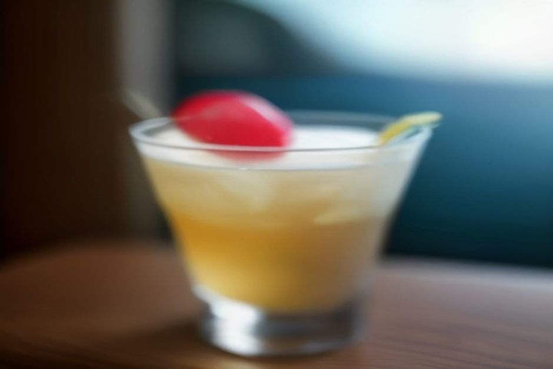
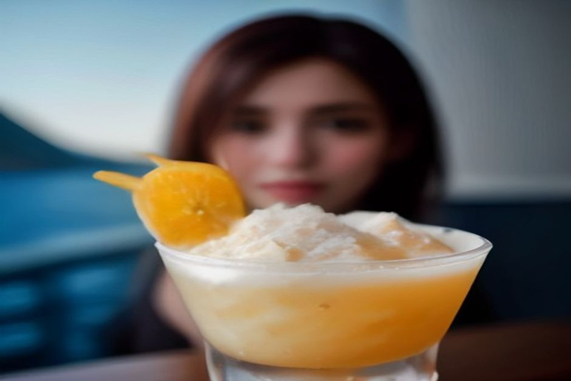

Se a Madeira vi consigliano di ordinare un "Nikita" e non sapete cosa aspettarvi, eccovi la risposta: è un cocktail denso e freddo di ananas, gelato alla vaniglia e birra chiara, più vicino a un frappè che a un drink da aperitivo. Nasce a Câmara de Lobos, a pochi chilometri da Funchal, e il nome viene da una canzone di Elton John.
Il Nikita in breve: cosa c'è nel bicchiere
Gli ingredienti sono tre. Succo di ananas (in certi bar anche gelato all'ananas), gelato alla vaniglia e una lager chiara. Si frulla tutto insieme fino a ottenere un composto spumoso, cremoso, di un giallo molto pallido. Qualche locale aggiunge un goccio di vino bianco, al posto della birra o insieme a essa.
Se cercate un paragone, pensate a una piña colada in cui il rum è stato sostituito dalla birra e il cocco dal gelato. Detta così suona strana, in bocca è dolce e fresca. Si beve con la cannuccia, spesso con un ombrellino di carta, e somiglia più a una merenda che a un cocktail.

Nikita cocktail: è alcolico? Lo possono bere i bambini?
La ricetta tradizionale contiene birra, quindi sì, è alcolica. Ma il gelato e il succo di ananas la diluiscono parecchio, e il risultato è molto più morbido di quanto farebbero pensare gli ingredienti. Questo non vuol dire che sia innocuo: si beve in fretta, soprattutto con il caldo. Se dopo dovete guidare, sceglietene uno solo e ordinatelo senza fretta.
La buona notizia è che molti bar tengono in menu anche una versione analcolica, con una bibita gassata o altro succo al posto della birra. È quella che bevono i bambini, e anche chi guida. Chiedetela semplicemente al banco: in un bar di Câmara de Lobos o di Funchal non vi guarderanno strano.
Nikita a Câmara de Lobos: la storia del bar dove è nato
Siamo nel 1985. In un piccolo bar sul lungomare di Câmara de Lobos lavora un barista di nome Marcelino, da poco tornato dal Brasile. Si racconta che stesse cercando qualcosa a metà tra una batida e una piña colada. Frulla ananas, gelato e birra mentre alla radio passa "Nikita", il singolo di Elton John di quell'anno. Il nome resta.
Il locale, allora chiamato Farol Verde, esiste ancora e oggi si chiama A Casa do Farol. Sopra la porta c'è un'insegna che dice "The Original Nikita Since 1985". Non è un'invenzione da guida turistica: è proprio lì che è cominciato tutto.
Perché vale la pena fermarsi a Câmara de Lobos
Il villaggio è già il più famoso tra quelli di pescatori di Madeira. Qui, nel 1419, João Gonçalves Zarco gettò l'ancora per la prima volta, e qui Winston Churchill dipinse le barche colorate tirate in secca. Il Nikita ha aggiunto un motivo più dolce per scendere dall'auto.
Lungo lo stesso tratto di porto, oggi, diversi bar servono la propria versione. I locali discutono volentieri su quale sia la più vicina a quella di Marcelino. Il modo migliore per farvi un'idea è assaggiarne uno e poi, se vi va, un secondo in un altro locale.
Nikita o poncha: quale ordinare per primo?
Sono i due drink simbolo dell'isola, ma servono a momenti diversi. La poncha è decisa e alcolica: rum di canna da zucchero sbattuto con miele e agrumi fino a farlo schiumare. Per qualcuno, alla prima volta, è un gusto da conquistare.
Il Nikita è il punto d'ingresso più facile. Freddo, dolce, quasi un dessert, e per questo molti visitatori finiscono per preferirlo. Un'idea semplice: poncha per il rito locale, Nikita per il pomeriggio caldo. In un solo viaggio avete provato entrambi.
Dove bere un Nikita: Câmara de Lobos, Zona Velha, Lido
- Câmara de Lobos. È la scelta ovvia: i bar lungo il porto, con le barche dei pescatori davanti, sono ciò che c'è di più vicino all'originale.
- Zona Velha di Funchal. Lo trovate nel menu di molti locali del quartiere vecchio, di solito in un bicchiere alto con cannuccia e ombrellino.
- Passeggiata del Lido. Anche qui è facile da trovare, ed è comodo se alloggiate in quella zona.
Non vi do orari o prezzi perché cambiano da locale a locale e da stagione a stagione. Guardate il menu prima di sedervi: in genere basta chiedere "um Nikita, por favor".
Come inserirlo in una giornata a Madeira
Il Nikita è un piacere da terraferma: non lo troverete versato in barca. Ma Câmara de Lobos è la prima tappa della gita di giorno di Chifbay, che parte alle 10:00 o alle 14:00 dalla Marina do Funchal, pontile C. Dopo Câmara de Lobos si passa sotto Cabo Girão e si arriva alla Fajã dos Padres, con bagno e paddle board.
Potete quindi bervi un Nikita sul lungomare prima di salire a bordo o dopo essere tornati a terra. A bordo, per ogni uscita, ci sono cibo e bevande inclusi. La barca è solo per il vostro gruppo, fino a 5 persone, con due skipper abilitati di Madeira. Il prezzo è per tutta la barca, mai a persona: 500 € per 2 h 30 fino a Ribeira Brava, 600 € per 3 h fino a Ponta do Sol.
Se preferite la sera, la crociera al tramonto parte 1 h 15 prima del tramonto, tutto l'anno. Dura 2 h fino a Cabo Girão per 400 €, oppure 2 h 30 fino a Ribeira Brava per 500 €, senza sosta per il bagno. Un Nikita in paese nel pomeriggio, poi la barca: funziona bene.
Ogni uscita comprende anche un video a 360° Insta360, riprese con il drone (se il tempo lo permette) e foto scattate con una vera macchina fotografica. La cancellazione è gratuita fino a 24 ore prima della partenza. Delfini, balene e belle luci non si possono promettere: se arrivano, sono un regalo.
Una bevanda inventata perché alla radio passava una canzone: più madeirense di così si fa fatica a trovare.
Quanto tempo serve e quando andare
Un Nikita richiede il tempo di sedersi e finirlo, quindi pochi minuti. Se volete vedere anche il villaggio, calcolate un'oretta a Câmara de Lobos. Il momento migliore è un pomeriggio caldo, ma non c'è una stagione sbagliata: è un drink che si gusta a qualsiasi ora in cui abbiate voglia di qualcosa di fresco.
Per organizzare il resto del viaggio trovate altre idee nella pagina sulle gite in barca a Madeira, tutte le uscite in questa pagina e i dettagli pratici nelle informazioni utili.
Il Nikita non è antico e non è raffinato. È un'invenzione da bar del 1985 diventata un simbolo del paese, e resta una delle cose più semplici e piacevoli da ordinare a Madeira. Non ogni tradizione ha bisogno di secoli per meritarsi un posto sul tavolo.
